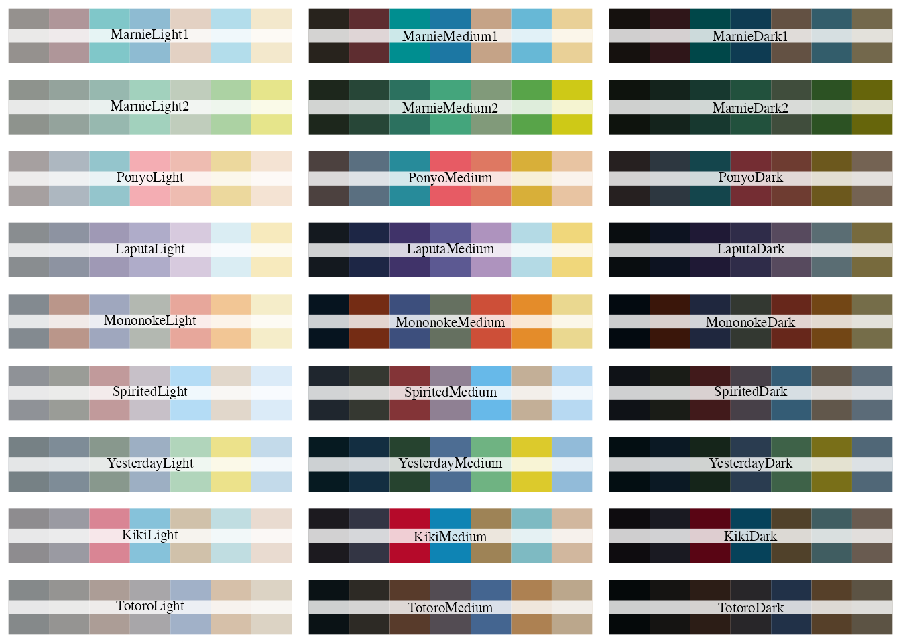
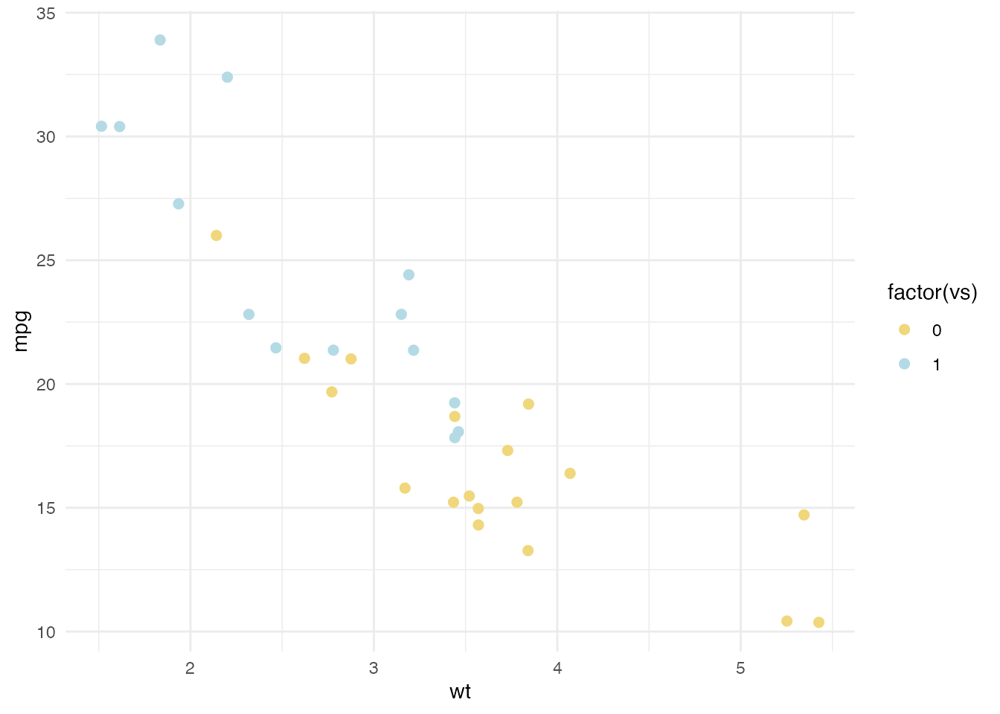
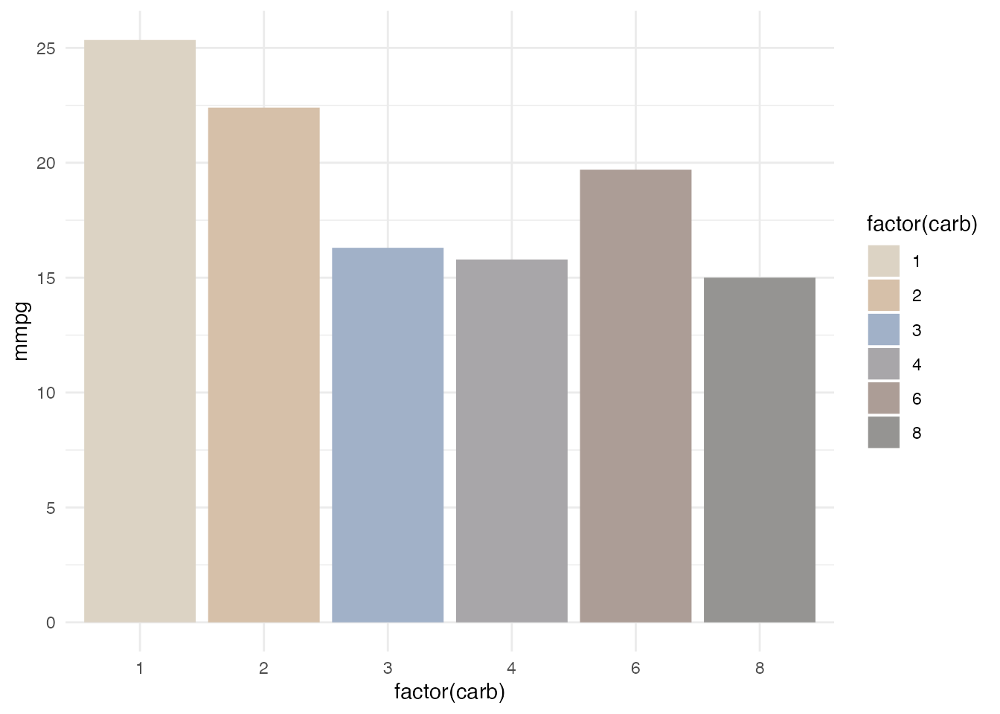
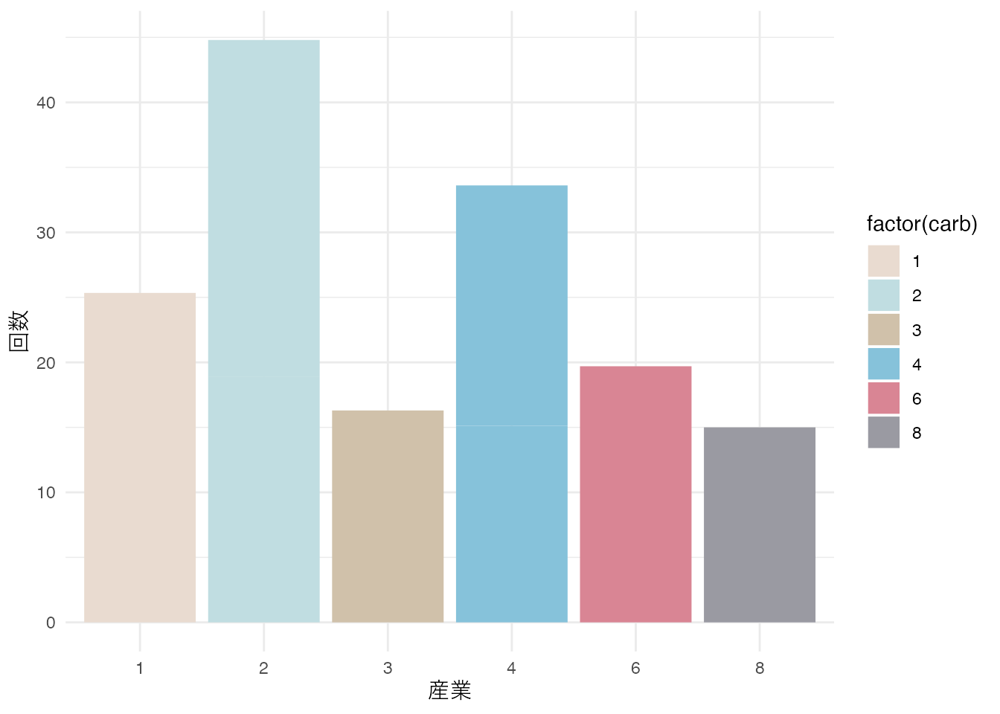

次のパッケージを付け加えます: 'dplyr' 以下のオブジェクトは 'package:stats' からマスクされています:
filter, lag 以下のオブジェクトは 'package:base' からマスクされています:
intersect, setdiff, setequal, unionこの章では、ggplot2で作成するグラフの色を宮崎駿監督の映画に出てくるような色にするために開発されたghibliパッケージを使って、よさげなグラフを作成してみます。
ghibliパッケージで提供されるカラーパレットの名前もジブリらしく、
Ponyo : 『崖の上のポニョ』Totoro : 『となりのトトロ』Kiki : 『魔女の宅急便』Laputa : 『天空の城ラピュタ』などがあり、色の濃度として、
Light : 明るいMedium : 中間Dark : 濃いが容易されています。 たとえばPonyoLightという名前でカラーパレットを使います。
必要なパッケージを読み込みます。
次のパッケージを付け加えます: 'dplyr' 以下のオブジェクトは 'package:stats' からマスクされています:
filter, lag 以下のオブジェクトは 'package:base' からマスクされています:
intersect, setdiff, setequal, unionカラーパレットを確認するため、以下のコードで3行9列のグラフを作成しています。
par(mfrow=c(9,3)) # 9行3列のグラフ
for(i in names(ghibli_palettes)) print(ghibli_palette(i))
ではグラフを作成してみましょう。 明るいラピュタならLaputaLightを使います。
data("mtcars") # 車のデータ
dfm <- mtcars
ggplot(dfm) +
aes(x = wt, y = mpg, color = factor(vs)) +
geom_jitter(size = 2) +
theme_minimal() +
# ghibli stuff
scale_colour_ghibli_d("LaputaMedium", direction = -1)
トトロならTotoroLightを使います。
dfm |>
group_by(carb) |>
summarise(mmpg = mean(mpg)) |>
ggplot() +
aes(x = factor(carb), y = mmpg, fill = factor(carb)) +
geom_col() + theme_minimal() +
# ghibli stuff
scale_fill_ghibli_d("TotoroLight", direction = -1)
魔女の宅急便なら、KikiLightを使います。
g <- dfm |>
group_by(carb, vs) |>
summarise(mmpg = mean(mpg)) |>
ungroup() |>
ggplot() +
aes(x = factor(carb), y = mmpg, fill = factor(carb)) +
geom_col() +
theme_minimal() +
xlab("産業") + ylab("回数") +
scale_fill_ghibli_d("KikiLight", direction = -1)`summarise()` has grouped output by 'carb'. You can override using the
`.groups` argument.print(g)
ggroughパッケージを使うと、手書き風のグラフを作成することができます。 ggplot2のグラフを手書き風に変換することができます。 ただし、ggroughパッケージは、画像ファイルSVGを出力することになります。
# fist-time only
# devtools::install_github("xvrdm/ggrough")
library(ggrough) # 手書き風のグラフ
library(ragg) # SVG to PNG
options <- list( # 設定
Background = list(roughness = 8),
GeomCol = list(
fill_style = "zigzag",
angle_noise = 0.5,
fill_weight = 2
)
)
get_rough_chart(g, options)このように、ジブリカラーで手書き風というエモいグラフが作成できます。 当然ですが、使いどころを間違えないようにしましょう。